표면처리산업기사 (2012-08-26 기출문제)
1과목: 금속재료 및 재료시험
1. 다음 중 과공석강의 탄소함량은 약 몇 wt% 인가?
- 0.001 ~ 0.8
- 0.8 ~ 2.1
- 2.1 ~ 4.3
- 4.3 ~ 6.67
(정답률: 85%)

2. 500~600℃까지 가열해도 뜨임 효과에 의해 연화되지 않고 고온에서도 경도의 감소가 적은 것이 특징인 18%W – 4%Cr – 1%V – 0.8~0.9%C의 조성으로 된 강은?
- 다이스강(Dies Steel)
- 스테인리스강(Stainless Steel)
- 게이지용강(Guage Steel)
- 고속도공구강(High Speed Tool Steel)
(정답률: 73%)
3. 비정질합금의 특성을 설명한 것 중 옳은 것은?
- 구조적으로 장거리의 규칙성이 없다.
- 불균질한 재료이고 결정이방성이 있다.
- 강도가 높고 연성이 커 가공경화를 일으킨다.
- 열에 강하며 고온에서 결정호를 일으킨다.
(정답률: 47%)
4. 열전대로 사용되는 알루멜(alumel)의 조성은?
- 90%Ni - 10%Cr
- 91%Ni – 7%Cr – 1%Au
- 91%Ni – 7%Sn – 2%Fe
- 96%Ni – 3.5%Al – 0.5%Fe
(정답률: 82%)
5. 순금속에 비교한 합금의 특징으로 옳은 것은?
- 용해점이 높아진다.
- 내열성 및 내식성이 감소한다.
- 전기전도율이나 열전도율이 커진다.
- 강도와 경도가 커지고 전성과 연성이 작아진다.
(정답률: 75%)
6. 특수 초경합금 중에 핍고 초경합금의 특성이 아닌 것은?
- 내마모성이 높다.
- 피삭재와 고온 반응성이 높다.
- 내크래이터(Crater)성과 내산화성이 우수하다.
- 강, 주강, 주철, 비철, 금속의 절삭에 범용으로 사용할 수 있다.
(정답률: 40%)
7. 재결정온도가 낮아지는 조건으로 틀린 것은?
- 순도가 낮을수록 낮아진다.
- 가공도가 클수록 낮아진다.
- 가공시간이 길수록 낮아진다.
- 결정입자가 미세할수록 낮아진다.
(정답률: 50%)
8. 황동에 10~20%Ni을 첨가한 것으로 탄성 및 내식성이 좋으므로 탄성재료나 화학기계용 재료에 사용되는 것은?
- 양은
- Y합금
- 텅갈로이
- 길딩메탈
(정답률: 59%)
9. 초경합금(sintered hard alloys)의 특성이 아닌 것은?
- 경도가 높다.
- 내마모성이 높다.
- 연신율이 높다.
- 압축강도가 높다.
(정답률: 57%)
10. 흑심가단주철의 1단계 흑연화 현상의 반응식으로 옳은 것은?
- γ → α + Fe3C
- 2CO → CO2 + C
- Fe3C → 3Fe + C
- Fe3C + CO2 → 3Fe + 2CO
(정답률: 59%)
11. 일반적 재료시험을 정적 시험과 동적 시험 방법으로 나눌 때 동적 시험 방법에 해당되는 것은?
- 압축 시험
- 충격 시험
- 전단 시험
- 비틀림 시험
(정답률: 58%)
12. 피로시험에 대한 다음의 설명 중 틀린 것은?
- 직경이 큰 시험편일수록 피로한도가 높아진다.
- 일반적으로 온도가 올라가면 피로한도는 낮아진다.
- 연강의 경우 200~300℃인 때가 실온에서보다 피로한도가 높다.
- 시험편에 결손부나 구멍 등의 응력집중의 원인이 있으면 피로한도는 낮아진다.
(정답률: 90%)
13. 시험체의 구멍을 통과시킨 자성체에 교류 자속을 가함으로써 시험체에 유도 전류를 보내는 방법으로 선형자계를 형성하며 관 및 관 이음매에 적용하는 자화방법은?
- 코일법
- 극간법
- 자속 관통법
- 전류 관통법
(정답률: 77%)
14. 다음 방사선 동위원소 중 반감기가 가장 긴 것은?
- Th-170
- Co-60
- Ra-226
- Cs-137
(정답률: 67%)
15. 두께가 t(mm)인 철판을 직경이 d(mm)인 원형의 펀치로 전단하여 관통시킬 때 전단응력(τ)을 계산하는 식으로 옳은 것은? (단, P = 전단하중, A = 전단면적 이다.)
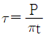
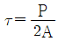
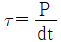
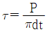
(정답률: 43%)
16. 스크래치(scratch)를 이용한 경도 시험법은?
- 초음파 경도시험
- 로크웰 경도시험
- 마르텐스 경도시험
- 하버트 진자 경도시험
(정답률: 58%)
17. 금속현미경 조직사진의 배율 표시방법으로 사진의 하단에 길이 1cm의 선위에 20μm의 스케일 표시가 되어있는 경우 배율은 몇 배인가?
- 200배
- 300배
- 400배
- 500배
(정답률: 70%)
18. 금속재료에서 인장시험시 사용되는 용어 중 어깨부위 반지름 정의로 옳은 것은?
- 연신율 측정에 기준이 되는 길이이다.
- 시험편의 중앙부에서 동일 단면을 갖는 부분이다.
- 시험편을 시험기에 설치했을 때 시험기 물리장치 사이의 시험편 길이이다.
- 평행부의 응력을 균일하게 분산시키기 위하여 평행부와 물림부 사이에 만든 원호 부분의 반지름이다.
(정답률: 63%)
19. 금속재료의 현미경 조직검사에서 황동(Brass)이나 청동(Bronze)에 대한 부식용 시약으로 적합한 것은?
- 왕수용액
- 염화제2철용액
- 질산-알콜용액
- 수산화나트륨용액
(정답률: 59%)
20. 다음 재료 중 상온에서 크리프 현상이 나타나지 않으나 250℃ 이상에서 크리프 현상이 현저하게 나타나는 것은?
- 철강
- 순금속
- 납(Pb)
- 구리(Cu)
(정답률: 65%)
2과목: 표면처리
21. 다음 중 예비탈지로 주로 사용되며, 가장 적절한 탈지법은?
- 용제탈지
- 알칼리탈지
- 전해탈지
- 초음파탈지
(정답률: 65%)
22. 다음 중 인산염 피막 처리액의 피막계열과 관계없는 것은?
- 인산 망간계
- 인산 칼슘계
- 인산 철계
- 인산 아연계
(정답률: 65%)
23. 다음 중 아연도금의 크로메이트 처리와 관계가 가장 적은 것은?
- 광택
- 교반속도
- 내식성
- 전류밀도
(정답률: 62%)
24. 음극전류효율을 Effc, 양극전류효율을 Effa라 할 때 다음 중 도금액의 금속분이 점점 희박해지는 경우는?
- Effc = Effa
- Effc ＞ Effa
- Effc ＜ Effa
- Effc ≤ 2Effa
(정답률: 70%)
25. 다음 중 SRHS(Self Regulating High Speed)욕에 관한 설명으로 옳은 것은?
- 액조성은 자동적으로 조절되지만 전착속도가 느리다.
- 장식용 크롬, 공업용 크롬, 배럴 크롬 등 다양한 부문에 이용할 수 있다.
- 전착 중 가공물이 부식되는 경우가 있으며, 특히 고전류 밀도부에 심하다.
- 사용되는 양극은 가능한 순납을 사용하며, 주석이 3%정도 함유한 납판을 사용해도 가능하다.
(정답률: 47%)
26. 다음 중 황산주석도금에 관한 설명으로 틀린 것은?
- 젤라틴은 온수에서 용해하여 사용한다.
- 크레졸·술폰산은 주석의 침전을 방지하는 환원제이다.
- 고온에서는 거친 도금, 밀착불량 등의 불량이 있어 온도에 주의하여야 한다.
- 음극진동과 공기 교반을 반드시 실시하여야 한다.
(정답률: 71%)
27. 다음 중 알칼리성 액으로 철강이나 아연 다이캐스팅 소지에 밀착성이 좋은 피로인산구리도금을 하고자 할 때의 설명으로 틀린 것은?
- 직접 도금이 가능하다.
- 우수한 평활성이 있고, 연한 도금이 된다.
- 시안화구리 스트라이크 또는 니켈 스트라이크를 해야 한다.
- 시안분이 피로인산구리 도금액에 들어가면 해롭기 때문에 수세를 철저히 해야 한다.
(정답률: 62%)
28. 크롬도금에서 500A로 하루 5시간 연속작업을 했을 때 무수크롬산(CrO3)의 이론적 소비량은 약 얼마인가? (단, 크롬의이론석출량은 1Ah에 0.323g, 전류효율은15%이고, 산소의 분자량은 16, 크롬의 분자량은 52 이다.)
- 233g
- 333g
- 266g
- 466g
(정답률: 50%)
29. 다음 중 일반적으로 적용하는 표면처리법과 그 용도가 적절하지 않게 연결된 것은?
- 화성처리 – 금속의 착색
- 음극 스패터링 – 전자회로부품
- 용융도금 – 아연 및 주석 도금판
- 표면경화 – 플라스틱 금속 제품의 일부
(정답률: 87%)
30. 다음 중 플라스틱상에 도금할 때 감수성 부여 처리와 가장 관계가 깊은 것은?
- HNO3
- NaCN
- SnCl2 · 2H2O
- CrO3
(정답률: 77%)
31. 다음 중 연마재의 종류에 있어 적봉(rouge)과 가장 관계가 깊은 것은?
- Fe2O3
- Cr2O3
- Al2O3
- SiO2
(정답률: 91%)
32. 다음 중 아노다이징(anodizing)용 재료에 가장 적합한 것은?
- Al
- Cu
- Si
- Fe
(정답률: 100%)
33. 다음 중 도금층에 대한 비파괴식 측정법에 해당하는 것은?
- 유공도 시험(pin hole test)
- 염수분무 시험(salt spray test)
- 코로드코트 시험(corrodkote test)
- 와전류탐상 시험(eddy current test)
(정답률: 93%)
34. 다음 중 용융도금의 종류로만 나열한 것은?
- calorizing, aluminizing
- metalizing, chromizing
- galvanizing, aluminizing
- sheradizing, galvanizing
(정답률: 65%)
35. 다음 중 무전해 구리도금에서 각 성분의 역할이 틀린 것은?
- 착화제 – 롯셀염
- 환원제 – 포르말린
- pH 완충제 – 티오뇨소
- pH 조정제 – 수산화나트륨
(정답률: 69%)
36. 다음 중 이온도금에서 증발물질의 이온수를 다량으로 만드는 방법으로 가장 적절한 것은?
- PACVD(Plasma Assisted CVD)법
- HCD(Hollow Cathode Discharge)법
- ARE(Activated Reactive Evaporation)법
- LPPD(Low Pressure Plasma Deposition)법
(정답률: 30%)
37. 다음 중 크롬폐수 처리에 있어 환원제로 사용되지 않는 것은?
- 아황산가스(SO2)
- 황산제일철(FeSO4)
- 차아염소산나트륨(NaOCl)
- 산성 아황산나트륨(NaHSO3)
(정답률: 62%)
38. 수소가 실제로 발생하는 환원전위를
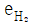
, 금속이 실제 석출하는 전위를 eM라 할 때 음극에서의 금속의 석출에 관한 설명으로 틀린 것은?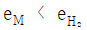
의 경우 금속만 석출하며, H2는 발생하지 않는다.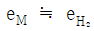
의 경우 e의 전위에서는 수소를 발생하면서 금속이 석출한다.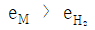
의 경우 실용적인 전류밀도 범위에서만 H2만 발생하고, 금속은 석출하지 않는다.- eM과
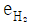
이 교차하는 경우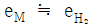
와 동일하나 양분극곡선의 교차점 이하의 전위에서는 금속의 석출이 많아지며, H2의 발생량이 적다.
(정답률: 54%)
39. 다음 중 수소취성의 발생과 가장 관계가 깊은 것은?
- 전해양극탈지
- 전해연마
- 산세
- 활성탄
(정답률: 64%)
40. 다음 중 Ni 도금액에 붕산을 넣는 주된 이유로 옳은 것은?
- 전도성을 높이기 위해서
- 불순물의 제거를 돕기 위해서
- 철분의 해를 방지하기 위해서
- 도금액의 pH의 변화를 완충하기 위해서
(정답률: 65%)
3과목: 부식방식
41. 다음 중 이온이나 분자의 농도차로 전기화학 반응이 일어나는 전극 표면에서 이온이 이동하는 주된 과정은?
- 전기 이동
- 대류
- 분산
- 확산
(정답률: 80%)
42. 다음 중 18-8 스테인리스강의 입계부식을 일으키는 주요원인으로 옳은 것은?
- 수소 취성
- 크롬탄화물의 석출
- 부동태 피막 파괴
- 산화물 형성
(정답률: 53%)
43. 다음 중 토중부식을 방지하는 방법으로 가장 적절하지 않은 것은?
- 토양을 바꾼다.
- 금속피복을 입힌다.
- 양극보호를 한다.
- 유기 또는 무기의 피복을 입힌다.
(정답률: 48%)
44. 다음 중 입계 부식이 일어나는 금속이 아닌 것은?
- 알루미늄 합금
- 구리 합금
- 스테인리스강
- 은 합금
(정답률: 70%)
45. 실험실 부식시험 중 모형시험(Model Test)에 관한 설명으로 옳은 것은?
- 어떤 과정 또는 적용에 알맞은 재료를 선택하거나 재료의 부식을 방지하기 위한 방법으로 연구하는 것이다.
- 특정한 자연환경에서 사용하기 위한 가장 적당한 재료 혹은 방식법을 찾아내는데 목적으로 한다.
- 하나 또는 그 이상의 부식인자를 강화시킴으로써 실제 사용조건의 경우보다 더 빠른 속도로 부식을 진행시키는 방법이다.
- 실제의 사용조건을 만들어 부식을 촉진시키지 않고 오랜 기간에 걸쳐 행하는 시험이다.
(정답률: 91%)
46. 깨끗한 금속면에 오물이 있을 때 오물이 묻은 면에서 부식이 일어나는 주된 이유로 가장 적절한 것은?
- 금속이 오물보다 이온화 경향이 크기 때문에
- 오물이 금속보다 이온화 경향이 크기 때문에
- 오물이 묻은 금속면이 음극이 되기 때문에
- 오물이 묻은 금속면에 산소가 적기 때문에
(정답률: 43%)
47. 그림은 어떤 방식의 방법의 원리를 나타낸 것인가?
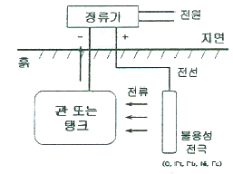
- 양극방식의 전해방법
- 음극방식의 전해방법
- 음극방식의 갈바닉방법
- 양극방식의 갈바닉방법
(정답률: 74%)
48. 미주전류에 의한 부식 중 부식속도가 가장 큰 이유는?
- 주파수가 낮은 직류에 의한 부식
- 주파수가 낮은 교류에 의한 부식
- 주파수가 높은 교류에 의한 부식
- 주파수가 높은 직류에 의한 부식
(정답률: 82%)
49. 부식의 형태 중 합금 중의 한 성분이 부식으로 인하여 선택적으로 제거되어지는 현상은?
- 선택부식
- 캐비테이션부식
- 프렛팅부식
- 입계부식
(정답률: 86%)
50. 다음은 표준 수소 전극과 짝지어 얻은 반쪽반응 표준환원 전위 값을 나타낸 것이다. 이들 반쪽 전지를 짝지었을 때 얻어지는 전지의 표준 전위차(기전력)는 얼마인가?
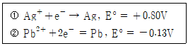
- 0.104
- 0.67
- 0.93
- 2.6
(정답률: 58%)
51. 고부식성의 자연환경에 있는 대형 금속구조물의 방식법으로써 가장 효과가 있는 것은?
- 내식성 재료 사용
- 금속 또는 비금속의 피복
- 환경 처리
- 전기화학적 방식
(정답률: 55%)
52. 황산용액 중 철의 전형적인 분극곡선에서 부동태 영역을 나타내는 것은?
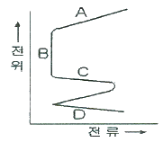
- A
- B
- C
- D
(정답률: 95%)
53. 부식금속이 음극이 되도록 하고, 양극은 불용성 양극 또는 가용성 양극을 사용하여 직류전원에 연결하여 방식하는 방법은?
- 갈바닉음극방식
- 전해음극방식
- 절연피복방식
- 미주전류방식
(정답률: 46%)
54. 부식은 금속 표면을 뚫고 들어가는 성질을 가지고 있기 때문에 파이프 탱크 등을 설계하는데 있어서 이러한 두께의 감소를 고려해야 한다. 어떤 탱크의 요구 수명이 10년이라고 할 때, 그리고 10년 동안에 표면을 뚫고 들어가는 부식 깊이가 약 1/8인치로 계산되었다면 그 탱크의 벽 두께는 얼마로 설계되어야 하는가?
- 1/6인치
- 1/5인치
- 1/4인치
- 1/9인치
(정답률: 70%)
55. 다음 중 해수부식의 특성에 영향을 미치는 가장 중요한 원소는?
- 산소 이온
- 염소 이온
- 질소 이온
- 플루오르 이온
(정답률: 92%)
56. 방식을 필요 이상으로 과도하게 음극분극시키면 다른 장애가 일어날 수 있는데 다음 중이러한 과방식에 의한 손실이 아닌 것은?
- 청열취성
- 양극의 소모 증가
- 전력의 낭비
- 소수취성 및 수소균열
(정답률: 75%)
57. 다음 중 일반적인 대기부식의 2가지 주요 인자로만 나열된 것은?
- 산소와 수분
- 이산화탄소와 수분
- 산소와 이산화탄소
- 수소와 수분
(정답률: 100%)
58. 다음 중 도금층의 밀착성 시험이 아닌 것은?
- β선 시험
- 굴곡 시험
- 열충격 시험
- 강구압입 시험
(정답률: 42%)
59. 전해질 용액 중에서 금속을 양극산화 함으로써 산화물 피막을 형성시키는 방법은?
- 블루잉(blueing)
- 아노다이징(anodizing)
- 파카라이징(parkerzing)
- 칼로라이징(calorizing)
(정답률: 80%)
60. 다음 중 오스테나이트 스테인리스강의 응력부식균열의 방지법으로 틀린 것은?
- 음극방식을 한다.
- OH- 이온의 농도를 높게 유지한다.
- 산성 분위기에서는 Cl- 이온을 제거한다.
- Ni의 함량을 45%이상으로 높이거나 N 및 그 외의 유해불순물을 가능한 한 낮은 값으로 한다.
(정답률: 47%)